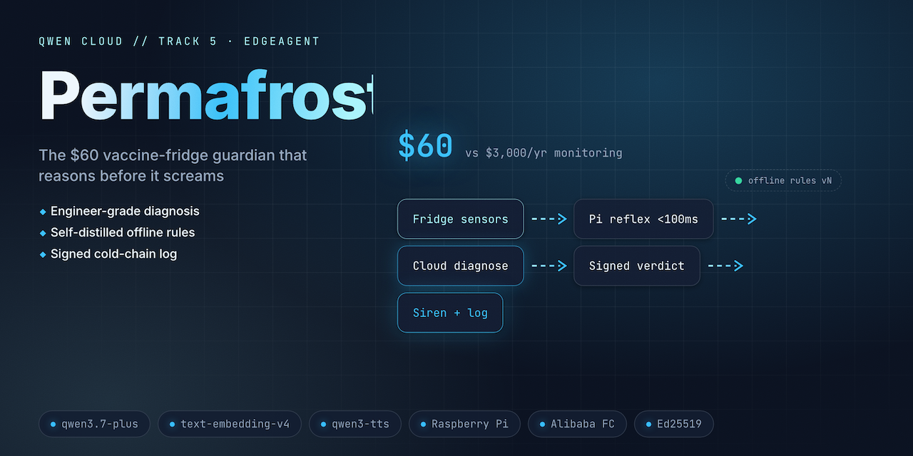

PERMAFROSTA $60 edge guardian for clinic vaccine fridges — reflexes in sub-milliseconds, reasoning in the Qwen cloud, proof in a hash chain.
02 · The hook
Every defrost cycle looks like an emergency to a threshold alarm. Staff silence it. Then the real emergency arrives.
03 · The problem
A nurse opens the fridge and finds Friday's power blip silently cooked $8,000 of childhood vaccines. The monitor that could have warned her was unplugged months ago — because it screamed at every defrost cycle.
04 · The solution
A Pi-class device reacts in <1 ms from local rules; qwen3.7-plus with thinking diagnoses each excursion with evidence and a guidance citation; every event extends a SHA-256 hash chain with Ed25519-signed daily roots.

05 · How it works
↩ the cloud distills its own verdicts into local rules vN+1, Ed25519-signs the bundle — the edge verifies before hot-swap, and refuses forgeries
06 · Live demo — the cable pull
Tick 1700 — the cloud vanishes while the door is ajar.
Local reflex trips at tick 1813 in <1 ms — zero connectivity required.
ECIES-sealed events sync; Qwen verdicts arrive late but complete.
verify-chain re-derives 2,178 hashes — the blackout left no hole.
07 · Key features
Local rules trip the buzzer four orders of magnitude inside the 100 ms budget — measured by permafrost bench, always before any cloud round-trip.
Near-identical +3.2 °C spikes: defrost reads BENIGN, door-ajar reads CRITICAL with a stock-risk ETA and citation.
Ed25519 verification before activation; unsigned, forged, or downgraded bundles are refused and chain-logged (invariant I3).
Events ECIES-sealed to the cloud's public key; the chain stays gap-free through a hard-kill power cut (invariant I1).
Flip any byte — entry, hash, seq, or signed root — and verify-chain fails, names the sequence, exits 1 (invariant I2).
08 · Why Qwen Cloud · why this build
ExcursionVerdict JSON drives actuators; a free-text parse failure at 2 AM is a dead-vaccine failurerequest_id09 · Traction — shipped, not promised
10 · The ask